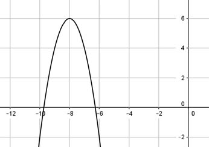

Aufgabe 93 Bestimmen Sie die Funktionsgleichung der dargestellten Parabel:  Allgemeine Form: y = ax2 + bx + c nach unten geöffnet, a muss negativ sein. Der Scheitelpunkt und ein weiterer Punkt können abgelesen und in die Scheitelpunktform y = a(x - xS)2 + yS eingesetzt werden. 2 Punktkoordinaten abgelesen: Nullstelle P1(-6|-2) , Scheitelpunkt P2(-8|6) P1 ergibt: x = -6 und y = -2 P2 ergibt: xS = -8 und yS = 6 Eingesetzt in die Scheitelpunktform: y = a(x - xS)2 + yS -2 = a * (-6 - (-8))2 + 6 |-6 -8 = a * 22 -8 = 4 * a |:4 a = -2 gestreckte Parabel, nach unten geöffnet Gesuchte Funktion : y = -2(x + 8)2² + 6 y = - 2(x2 + 16x + 64) + 6 y = -2x2 - 32x - 128 + 6 y = -2x2 - 32x - 122